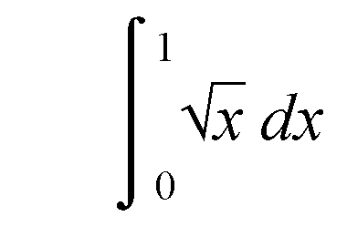

Rationale for Ada 2005
1.3.2 Overview: Access types
It has been said that playing with pointers is like
playing with fire – properly used all is well but carelessness
can lead to disaster. In order to avoid disasters, Ada 95 takes a stern
view regarding the naming of access types and their conversion. However,
experience has shown that the Ada 95 view is perhaps unnecessarily stern
and leads to tedious programming.
We will first consider
the question of giving names to access types. In Ada 95 all access types
are named except for access parameters and access discriminants. Thus
we might have
type Animal is tagged
record Legs: Integer; ... end record;
type Acc_Animal is access Animal; -- named
procedure P(Beast: access Animal; ... ); -- anonymous
Moreover, there is
a complete lack of symmetry between named access types and access parameters.
In the case of named access types, they all have a null value (and this
is the default on declaration if no initial value be given). But in the
case of access parameters, a null value is not permitted as an actual
parameter. Furthermore, named access types can be restricted to be access
to constant types such as
type Rigid_Animal is access constant Animal;
which means that we
cannot change the value of the Animal referred
to. But in the case of access parameters, we cannot say
procedure P(Beast: access constant Animal); -- not Ada 95
In Ada 2005 almost all these various restrictions
are swept away in the interests of flexibility and uniformity.
First of all we can
explicitly specify whether an access type (strictly subtype) has a null
value. We can write
type Acc_Animal is not null access all Animal'Class;
This means that we
are guaranteed that an object of type Acc_Animal
cannot refer to a null animal. Therefore, on declaration such an object
should be initialized as in the following sequence
type Pig is new Animal with ... ;
Empress_Of_Blandings: aliased Pig := ... ;
My_Animal: Acc_Animal := Empress_Of_Blandings'Access; -- must initialize
(The Empress of Blandings is a famous pig in the
novels concerning Lord Emsworth by the late P G Wodehouse.) If we forget
to initialize
My_Animal then
Constraint_Error
is raised; technically the underlying type still has a null value but
Acc_Animal does not. We can also write
not
null access constant of course.
The advantage of using
a null exclusion is that when we come to do a dereference
Number_of_Legs: Integer := My_Animal.Legs;
then no check is required to ensure that we do not
dereference a null pointer. This makes the code faster.
The same freedom to
add constant and not null also applies to access parameters.
Thus we can write all of the following in Ada 2005
procedure P(Beast: access Animal);
procedure P(Beast: access constant Animal);
procedure P(Beast: not null access Animal);
procedure P(Beast: not null access constant Animal);
Note that all is not permitted in this context
since access parameters always are general (that is, they can refer to
declared objects as well as to allocated ones).
Note what is in practice a minor incompatibility,
the first of the above now permits a null value as actual parameter in
Ada 2005 whereas it was forbidden in Ada 95. This is actually a variation
at runtime which is normally considered abhorrent. But in this case it
just means that any check that will still raise Constraint_Error
will be in a different place – and in any event the program was
presumably incorrect.
Another change in Ada
2005 is that we can use anonymous access types other than just as parameters
(and discriminants).
We can in fact also use anonymous
access types in
the declaration of stand-alone objects and components
of arrays and records,
a renaming declaration,
a function return type.
Thus we can extend
our farmyard example
type Horse is new Animal with ... ;
type Acc_Horse is access all Horse;
type Acc_Pig is access all Pig;
Napoleon, Snowball: Acc_Pig := ... ;
Boxer, Clover: Acc_Horse := ... ;
and now we can declare
an array of animals
Animal_Farm: constant array (Positive range <>) of access Animal'Class :=
(Napoleon, Snowball, Boxer, Clover);
(With acknowledgments
to George Orwell.) Note that the components of the array are of an anonymous
access type. We can also have record components of an anonymous type
type Ark is
record
Stallion, Mare: access Horse;
Boar, Sow: access Pig;
Cockerel, Hen: access Chicken;
Ram, Ewe: access Sheep;
...
end record;
Noahs_Ark: Ark := (Boxer, Clover, ... );
This is not a very good example since I am sure that
Noah took care to take actual animals into the Ark and not merely their
addresses.
A more useful example
is given by the classic linked list. In Ada 95 (and Ada 83) we have
type Cell;
type Cell_Ptr is access Cell;
type Cell is
record
Next: Cell_Ptr;
Value: Integer;
end record;
In Ada 2005, we do
not have to declare the type Cell_Ptr in order
to declare the type Cell and so we do not
need to use the incomplete declaration to break the circularity. We can
simply write
type Cell is
record
Next: access Cell;
Value: Integer;
end record;
Here we have an example of the use of the type name
Cell within its own declaration. In some cases this is interpreted
as referring to the current instance of the type (for example, in a task
body) but the rule has been changed to permit its usage as here.
We can also use an
anonymous access type for a single variable such as
List: access Cell := ... ;
An example of the use
of an anonymous access type for a function result might be in another
animal function such as
function Mate_Of(A: access Animal'Class) return access Animal'Class;
We could then perhaps
write
if Mate_Of(Noahs_Ark.Ram) /= Noahs_Ark.Ewe then
... -- better get Noah to sort things out
end if;
Anonymous access types can also be used in a renaming
declaration. This and other detailed points on matters such as accessibility
are discussed in Section
3.3.
The final important change in access types concerns
access to subprogram types. Access to subprogram types were introduced
into Ada 95 largely for the implementation of callback. But important
applications of such types in other languages (going back to Pascal and
even Algol 60) are for mathematical applications such as integration
where a function to be manipulated is passed as a parameter. The Ada
83 and Ada 95 approach has always been to say "use generics".
But this can be clumsy and so a direct alternative is now provided.
Recall that in Ada
95 we can write
type Integrand is access function(X: Float) return Float;
function Integrate(Fn: Integrand; Lo, Hi: Float) return Float;
The idea is that the
function Integrate finds the value of the
integral of the function passed as parameter Fn
between the limits Lo and Hi.
This works fine in Ada 95 for simple cases such as where the function
is declared at library level. Thus to evaluate

we can write
Result := Integrate(Sqrt'Access, 0.0, 1.0);
where the function Sqrt
is from the library package Ada.Numerics.Elementary_Functions.
However, if the function
to be integrated is more elaborate then we run into difficulties in Ada
95 if we attempt to use access to subprogram types. Consider the following
example which aims to compute the integral of the expression xy
over the square region 0 ≤ x, y ≤ 1.
with Integrate;
procedure Main is
function G(X: Float) return Float is
function F(Y: Float) return Float is
begin
return X*Y;
end F;
begin
return Integrate(F'Access, 0.0, 1.0); -- illegal in Ada 95
end G;
Result: Float;
begin
Result:= Integrate(G'Access, 0.0, 1.0); -- illegal in Ada 95
...
end Main;
But this is illegal in Ada 95 because of the accessibility
rules necessary with named access types in order to prevent dangling
references. Thus we need to prevent the possibility of storing a pointer
to a local subprogram in a global structure. This means that both F'Access
and G'Access are illegal in the above.
Note that although we could make the outer function
G global so that G'Access
would be allowed nevertheless the function F
has to be nested inside G in order to gain
access to the parameter X of G.
It is typical of functions being integrated that they have to have information
passed globally – the number of parameters of course is fixed by
the profile used by the function Integrate.
The solution in Ada
2005 is to introduce anonymous access to subprogram types by analogy
with anonymous access to object types.
Thus the function
Integrate becomes
function Integrate(Fn: access function(X: Float) return Float;
Lo, Hi: Float) return Float;
Note that the parameter Fn
has an anonymous type defined by the profile so that we get a nesting
of profiles. This may seem a bit convoluted but is much the same as in
Pascal.
The nested example above is now valid and no accessibility
problems arise. (The reader will recall that accessibility problems with
anonymous access to object types are prevented by a runtime check; in
the case of anonymous access to subprogram types the corresponding problems
are prevented by decreeing that the accessibility level is infinite –
actually the RM says larger than that of any master which comes to the
same thing.)
Anonymous access to subprogram types are also useful
in many other applications such as iterators as will be illustrated later.
Note that we can also prefix all access to subprogram
types, both named and anonymous, by constant and not null in the same
way as for access to object types.
© 2005, 2006, 2007 John Barnes Informatics.
Sponsored in part by: